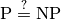

1.3. Real examples
Since the ‘90s, CP is used by small and major companies (including Google) around the world. It has become the technology of choice for some problems in scheduling, rostering, timetabling, and configuration.
Here is a non-exhaustive list[1] where CP has been used with success:
- Production sequencing
- Production scheduling
- Satellite tasking
- Maintenance planning
- Transport
- Stand allocation
- Personnel assignment
- Personnel requirement planning
- Hardware design
- Compilation
- Financial applications
- Placement
- Industrial cutting
- Air traffic control
- Frequency allocation
- Network configuration
- Product design
- Product blending
- Time tabling
- Production step planning
- Crew rotation
- Aircraft rotation
- Supply chain management
- Routing
- Manufacturing
- Resource allocation
- Circuit verification
- Simulation
- ...
With such a high success rate in different application, CP can be thus described as one efficient tool in the toolbox of Operations Research experts.
1.3.1. Success stories
We could list hundreds of success stories were CP made a - sometimes huge - difference but we don’t want to advertise any company. You’ll find plenty on the web. Let us just advertise CP as a very efficient and convenient tool to solve industrial problems.
Most of the time, CP[2] :
- solves your problem within minutes;
- only needs the push of a button (after setting some parameters and providing some data of course);
- is very flexible and easily allows you to add or remove side constraints;
- improve solutions found by hand by the experts by up to sometimes 30%.
All of this can only happen if you find the right software that is readily well-adapted to your problem. Otherwise, a good option is to develop the product yourself, using or-tools for instance.
1.3.2. Can CP be compared to the holy grail of Operations Research?
From time to time, people search for the holy grail of Computer Science. We could define it as the pursuit to solving arbitrary combinatorial optimization problems with one universal algorithm. As E. Freuder (see [Freuder1997]) states it:
The user states the problem, the computer solves it.
For instance, David Abramson and Marcus Randall in their 1997 article (see [Abramson1997]) tried to apply Simulated Annealing[3] to solve arbitrary combinatorial optimization problems[4].
Modeling languages ( AIMMS, AMPL, GAMS, Xpress-Mosel, etc) are yet another attempt at engineering this universal algorithm. You write your model in a common algebraic/symbolic language, often close to the mathematical language[5]. It is then translated for an appropriate solver of your choice. Some modeling languages even let you write high level algorithms. One of the great advantages of modeling languages is the possibility to quickly prototype your algorithm and to try it online (and for free!) with the NEOS server[6].
All these approaches don’t compare[7] to dedicated algorithms tailored for a specific problem[8]. Until now, all these attempts have been vain. That said, CP - because of its particularity of dealing with constraints locally[9] - is probably the closest technique to the holy grail. Actually, we didn’t cite E. Freuder fully (see [Freuder1997]):
Constraint Programming represents one of the closest approaches computer science has yet made to the Holy Grail of programming: the user states the problem, the computer solves it.
Footnotes
| [1] | This list is much inspired from the excellent documentation provided by Helmut Simonis under the Creative Commons Attribution-Noncommercial-Share Alike 3.0 Unported License. |
| [2] | This is common knowledge in the field. |
| [3] | You can learn more about Simulated Annealing (SA) in the section Simulated annealing (SA). |
| [4] | This implies that any problem can be translated into a combinatorial problem! |
| [5] | See Wikipedia Algebraic languages. |
| [6] | The NEOS server proposes several state-of-the-art solvers. As stated on its website: “Optimization problems are solved automatically with minimal input from the user. Users only need a definition of the optimization problem; all additional information required by the optimization solver is determined automatically.” |
| [7] | Luckily, otherwise we would be jobless! |
| [8] | Actually, this search for the holy grail is closely related to the famous  question. If such algorithm exists, then most probably . See the section Intractability. |
| [9] | See the subsection The ease to model a problem. |
Bibliography
| [Freuder1997] | (1, 2) E. C. Freuder. In Pursuit of the Holy Grail, Constraints, Kluwer Academic Publishers, 2, pp. 57-61, 1997 |
| [Abramson1997] | D. Abramson and M. Randall. A Simulated Annealing code for General Integer Linear Programs, Annals of Operations Research, 86, pp. 3-24, 1997. |
Google or-tools |
User's Manual
Google search
Welcome
Tutorial examples
Current chapter
1. Introduction to constraint programming
Previous section
1.2. What is constraint programming?